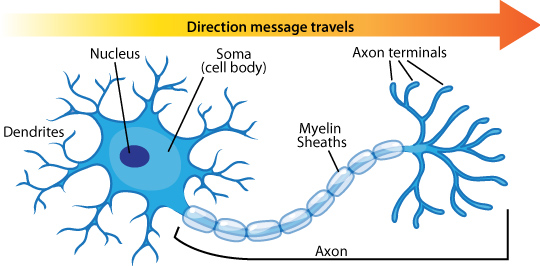

Lecture 1: Introduction to the Brain: Anatomy and Development
Jean-Dominique Bauby
+ Suffered a massive stroke, woke up 20 days later unable to do anything but blink a single eye-lid - Locked-in Syndrome: Mental faculties are intact, but majority of skeletal muscles are paralyzedCategories of Nervous System Function
+ Sensory - Perception is interpretation of the outside/internal world. Sometimes inaccurate in predictable ways (Gestalt principles, equally sized circles surrounded by either large or small circles, motion illusion). Perception/interpretation is dependent on context + Homeostasis - Maintains internal balance, so to speak - Heat beat, breathing, gut function, etc. - Autonomic reaction/arousal comes like a full package, all the responses always happen and at once + Abstract/Higher - Involved in cognition, thinking, higher order computation, etc. + Motor - Motor neurons, also known as motoneurons and/or lower motor neurons, are neurons in the central nervous system that only target skeletal muscle - No other neurons ‘talk’ to skeletal muscle, and skeletal muscle cannot act/’say’ anything on its own / of its own volition - Motor cortex goes to motor neurons (either indirectly or directly), known as the motor hierarchy - Final Common Pathway (Sherrington): central nervous system control of behavior in which all motor control signals ultimately synapse on motor neuronsStructures Involved in Motor Control
+ Cerebellum - Coordinates large scale, complex movements - Not necessary for simple movements (ie movement of a finger up and down) - ‘Thinking’ can interfere with function - Coordinates between agonist (“go”) and antagonist (“break”) signals - Loss of cerebellum leads to ataxia – loss of full control of bodily movement + Basal Ganglia - Responsible for action selection / as a result is anti-multitasking - Starting point is to do nothing, then listens to cerebrum and decides what cerebrum is emphasizing - ‘Tied’ into cerebral cortex so to speak, so movements controlled by it more affected by thinking/cognition. Also involved in thought selection. - Composed of the striatum and palladum
Neural Development
+ Organizing point on dorsal and caudal surface of embryo + No orientation to ball of cells + I could write multiple pages on neural development, but these images and video will do a much better job than I will:Directional Terminology

Lecture 2: Cellular Organization of Vertebrate Central Nervous System
Corpus Callosum
+ Connects the two telencephalic hemispheres, connecting one place in one hemisphere to its analogous partner on the other hemisphere + Keeps the pieces of the brain from floating apart + Forms a physical joining between the telencephalon and the diencephalon: internal capsule, which is almost all descending information, except when info goes back up from thalamus/hypothalamus to cortex via the capsule + Normally, holding something in the left hand gives sensory input to the right hemisphere of the brain, but that information is normally transmitted across the corpus callosum to the left hemisphere to language areas of the brain so that you can say “I am holding a coin”. Without the corpus callosum, you would not be able to say this.More On Neurulation: Chick Embryo!
+ Neural ectoderm plate invaginates, becomes a groove, then buds off as a neural tube + 24 hour chick embryo - Somites are blocks of mesoderm on either side of the neural tube. Each corresponds to piece of the spinal cord - Brain starting to swell + 33 hour chick embryo - A lot more swelling of vesicles - More somites + 48 hour chick embryo - Head vesicles have expanded greatly, optic vesicle forms (buds off the diencephalon) - More somites, Wings forminng + Cross section of neural tube - Right side is dorsal, side with the neural tube - Circle to the left of neural tube is notochord + Big neural space at the top is part of the brain, is the diencephalon and telencephalon - Foramen of Monro: tube that joins the telencephalon and diencephalon + Small neural space at the bottom is the spinal cord - Down is dorsal (closer to neural tube) - Dorsal Root Ganglia Groupings to right and left are part of the peripheral nervous system. Form from neural crest cells, form sensory neurons. - Motor neurons form on the ventral side of spinal cordStructure of Neurons
+ Soma: circular cell body + Dendrites: processes extending outward from cell bodies, receive information from outside, decrements in size like branches + Axons: processes coming off of soma, transmits information, doesn't decrement in size + Synaptic terminal: where information output actually occurs - Boutons: circular endpoints where chemical transmission occurs between synaptic partners - Chemical transmission occurs via the release of neurotransmitters + Synaptic Cleft: space between axon terminal and postsynaptic partner (usually dendrite) - Huge influx of calcium allows presynaptic neuron to release packaged neurotransmitters - Vesicle fuses with presynaptic membrane (Presynaptic terminal), releases neurotransmitter - Neurotransmitter binds to receptors on the postsynaptic membrane (postsynaptic element) - Postsynaptic partner can be another neuron or a muscle or other things for peripheral neuron (will explain later)

Source